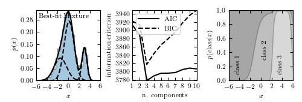

1D Gaussian Mixture Example¶
Figure 4.2.
Example of a one-dimensional Gaussian mixture model with three components. The left panel shows a histogram of the data, along with the best-fit model for a mixture with three components. The center panel shows the model selection criteria AIC (see Section 4.3) and BIC (see Section 5.4) as a function of the number of components. Both are minimized for a three-component model. The right panel shows the probability that a given point is drawn from each class as a function of its position. For a given x value, the vertical extent of each region is proportional to that probability. Note that extreme values are most likely to belong to class 1.
{kind=link}
# Author: Jake VanderPlas
# License: BSD
# The figure produced by this code is published in the textbook
# "Statistics, Data Mining, and Machine Learning in Astronomy" (2013)
# For more information, see http://astroML.github.com
# To report a bug or issue, use the following forum:
# https://groups.google.com/forum/#!forum/astroml-general
from matplotlib import pyplot as plt
import numpy as np
from sklearn.mixture import GaussianMixture
#----------------------------------------------------------------------
# This function adjusts matplotlib settings for a uniform feel in the textbook.
# Note that with usetex=True, fonts are rendered with LaTeX. This may
# result in an error if LaTeX is not installed on your system. In that case,
# you can set usetex to False.
if "setup_text_plots" not in globals():
from astroML.plotting import setup_text_plots
setup_text_plots(fontsize=8, usetex=True)
#------------------------------------------------------------
# Set up the dataset.
# We'll create our dataset by drawing samples from Gaussians.
random_state = np.random.RandomState(seed=1)
X = np.concatenate([random_state.normal(-1, 1.5, 350),
random_state.normal(0, 1, 500),
random_state.normal(3, 0.5, 150)]).reshape(-1, 1)
#------------------------------------------------------------
# Learn the best-fit GaussianMixture models
# Here we'll use scikit-learn's GaussianMixture model. The fit() method
# uses an Expectation-Maximization approach to find the best
# mixture of Gaussians for the data
# fit models with 1-10 components
N = np.arange(1, 11)
models = [None for i in range(len(N))]
for i in range(len(N)):
models[i] = GaussianMixture(N[i]).fit(X)
# compute the AIC and the BIC
AIC = [m.aic(X) for m in models]
BIC = [m.bic(X) for m in models]
#------------------------------------------------------------
# Plot the results
# We'll use three panels:
# 1) data + best-fit mixture
# 2) AIC and BIC vs number of components
# 3) probability that a point came from each component
fig = plt.figure(figsize=(5, 1.7))
fig.subplots_adjust(left=0.12, right=0.97,
bottom=0.21, top=0.9, wspace=0.5)
# plot 1: data + best-fit mixture
ax = fig.add_subplot(131)
M_best = models[np.argmin(AIC)]
x = np.linspace(-6, 6, 1000)
logprob = M_best.score_samples(x.reshape(-1, 1))
responsibilities = M_best.predict_proba(x.reshape(-1, 1))
pdf = np.exp(logprob)
pdf_individual = responsibilities * pdf[:, np.newaxis]
ax.hist(X, 30, density=True, histtype='stepfilled', alpha=0.4)
ax.plot(x, pdf, '-k')
ax.plot(x, pdf_individual, '--k')
ax.text(0.04, 0.96, "Best-fit Mixture",
ha='left', va='top', transform=ax.transAxes)
ax.set_xlabel('$x$')
ax.set_ylabel('$p(x)$')
# plot 2: AIC and BIC
ax = fig.add_subplot(132)
ax.plot(N, AIC, '-k', label='AIC')
ax.plot(N, BIC, '--k', label='BIC')
ax.set_xlabel('n. components')
ax.set_ylabel('information criterion')
ax.legend(loc=2)
# plot 3: posterior probabilities for each component
ax = fig.add_subplot(133)
p = responsibilities
p = p[:, (1, 0, 2)] # rearrange order so the plot looks better
p = p.cumsum(1).T
ax.fill_between(x, 0, p[0], color='gray', alpha=0.3)
ax.fill_between(x, p[0], p[1], color='gray', alpha=0.5)
ax.fill_between(x, p[1], 1, color='gray', alpha=0.7)
ax.set_xlim(-6, 6)
ax.set_ylim(0, 1)
ax.set_xlabel('$x$')
ax.set_ylabel(r'$p({\rm class}|x)$')
ax.text(-5, 0.3, 'class 1', rotation='vertical')
ax.text(0, 0.5, 'class 2', rotation='vertical')
ax.text(3, 0.3, 'class 3', rotation='vertical')
plt.show()